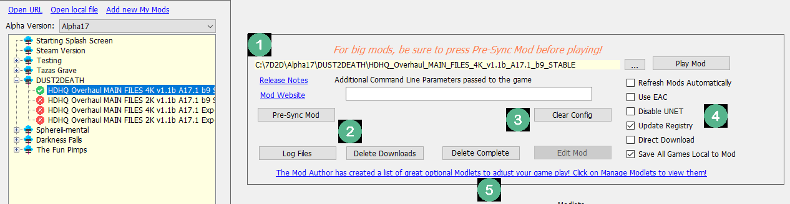
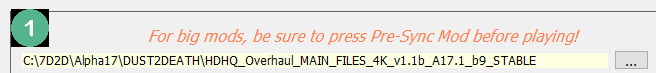
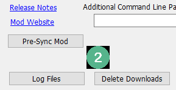
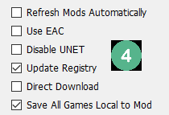

Installed Mod Screen
Mods Screen
The Mods Screen has a lot of functionality, so let's take a look.
An installed Mod shows up with a green check mark

1 ) This is the path where the Mod is installed

Click on the button with the three Dots, or anywhere on the path in yellow, and it will open up a Windows Explorer window at that location.
2 ) Mod Utilities

Release Notes: If the mod has some release notes, showing changes, you can click on this button to view it.
Mod Website: If the mod has a web site, you can click on this button to visit it.
Pre-Sync Mod: When you first install a Mod, you can press Pre-Sync Mod, which will download the Mod, but will not install it. It's recommend to always Pre-Sync a mod.
Log Files: If you are having a problem, you can click on Log Files to show the available log files
Delete Downloads: The Mod Launcher downloads files in a folder called TempMods. If you are having trouble with the download, clicking on Delete Downloads will clear out potentially bad downloads.
3 ) More Mod Utilities

Clear Config: Starting in version 2.0.50 of the Mod Launcher, configurations are stored in a file. Pressing Clear Config will remove the Mod's configuration settings, re-setting it to default.
Delete Complete: This will remove the Downloads and the copy of the game completely. It will not delete your save game.
Edit Mod: This button is only available for the My Mods, and let's you edit and change the download links
4 ) Game Options

Refresh Mods Automatically: This tells the Mod Launcher to keep the mod up to date. If the mod author makes a change, the mod launcher will update the mod automatically for you if this is checked.
Use EAC: EAC is the protection system 7 Days To Die uses. Some mods are not EAC-safe, so this option may have to be turned off.
Disable UNET: Disables the UNET Protocol, which has caused problems in the past with connecting to servers.
Update Registry: If the mod you are playing has a server IP and port set up for it, then this will update the "Connect To" box in the Join A Game window.
Direct Download: The Mod Launcher has two ways of downloading files: Through git and direct downloads. Checking this will download the zip file directly. However, it will re-download the full file each time. Only check this if you are having a problem with the download otherwise.
Save All Games Local to Mod: This tells the game to install all save games under a folder, C:\7D2D\Saves by default, based on the Mod name. When you load a mod with this checked, it's save games will be the only ones showing up in Continue a Game. This is to help prevent accidentally loading the wrong world with the wrong mod.
5 ) Curated List

Some Mods may offer a curated list of modlets. Clicking on this link will open the Mod Download, allowing you to add extra modlets that the Mod Author thinks you'll enjoy.
Created with the Personal Edition of HelpNDoc: Create cross-platform Qt Help files